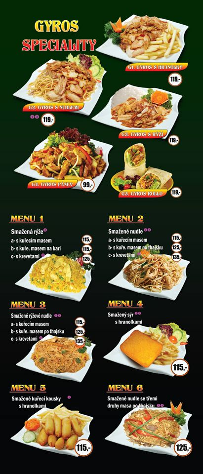
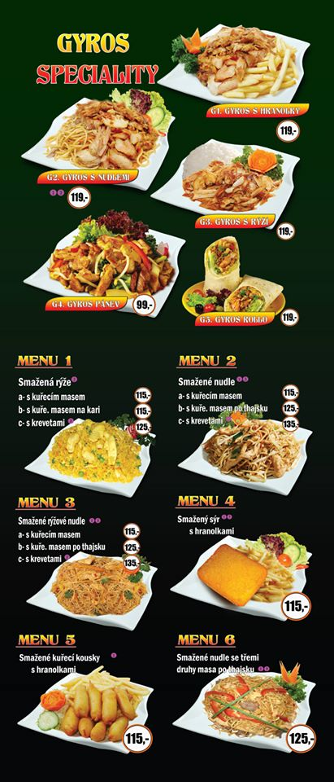

U Šediveho Vola
Website: https://www.usedivehovola.com/denni-obedove-menu
How to get there from Londynske Namesti: Tram 5 to Fakultní nemocnice u sv. Anny v Brně
ROZVOZ OBEDOVEHO MENU ZDARMA
Objednavky menu prijimame kazdy den do 9.00 hod. na tel. +420 608 678 740. Jidlo si ale muzete vybrat a objednat jednorazove rovnou na cely tyden.
Cenik obedoveho menu vcetne polevky a kazdy den male prekvapeni:
Menu cislo 1 - 95 Kc
Menu cislo 2 - 100 Kc
Menu cislo 3 az 5 - 105 Kc
Box - 10 Kc
Alergeny najdete v zavorkach u kazdeho jidla.
Pondeli 26.04.2021
Porkova polevka (1, 3, 7)
Grilovane kureci medailonky, spagety pomodoro se spanelskymi olivami sypane parmezanem ( 1, 7)
Pecene kuratko po zahradnicku s jarnimi redkvickami, dusena hraskova ryze ( 1, 7, 9)
Dozlatova usmazeny Hermelin, varene brambory a domaci tatarska omacka ( 1, 3, 7, 10)
Kyta z mladeho selatka po myslivecku na smetane, spikovana klinky slaniny, houskove knedliky (1, 3, 7, 9, 10)
Pekingske nudle z krutich prsou, pripravene na woku na pekingsky zpusob s krupavou zeleninou, citronova ryze s burskymi orechy ( 5, 6, 8, 11 )
Utery 27.04.2021
Dragounska cesnecka (3)
Indicke lehce palive kari s cockou a kvetakem, s psenicnou tortillou (1, 7)
Hrachova kase omastena cibulkou s uzenym masem, proutky sterilovanych okurek a chlebem ( 1)
Gratinovany kureci steak se sunkou a syrem, smazene domaci steakove hranolky, americky dressing s bylinkami (1, 3, 7, 10)
Spanelsky ptacek, pripraveny z veprove kotlety, dusena dlouhozrnna ryze (1, 3, 10)
Rybi file z aljasske tresky zapecene se syrem a baby karotkou, bramborova kase, zeleninovy salat (4, 7)
Streda 28.04.2021
Jihoceska kulajda (1, 3, 7)
Povidlove tasticky, posypane mletym makem (1, 3, 7)
Francouzske brambory se zlatavou syrovou kurkou, proutky sterilovanych okurek (1, 3, 7)
Ondrasuv kureci rizek v bramboraku s domacim salatem Coleslaw (1, 3, 9)
Svickova hovezi pecene z mladeho ceskeho bycka, houskove knedliky (1, 3, 7, 9, 10)
Grilovana marinovana krkovicka, stouchane brambory, salat z cinskeho zeli (5, 6, 10, 11)
Ctvrtek 29.04.2021
Kureci vyvar s nudlemi (1, 9)
Smazeny kvetak, varene petrzelkove brambory, domaci tatarska omacka (1, 3, 7, 10)
Penne se spenatem a restovanymi kurecimi nudlickami, posypane syrem Gran Moravia (1, 7)
Cheeseburger se stavnatym karbanatkem prelitym domaci BBQ omackou, osmazene bramborove korenene lodicky (1, 3, 5, 6, 10, 11)
Znojemska veprova pecene, dusena maslova ryze (1, 7)
Losos pripraveny na cesnekovem masle, bramborova kase, ovocny kompot (4, 7)
Patek 30.04.2021
Zeleninovy borsc s masem (1, 7, 9)
Zapekane palacinky vanilkovym kremem, prolozene jablecnou strudlovou naplni (1, 3, 7)
Paprikove rizoto s veprovym masem a hraskem sypane strouhanym syrem, sterilovany okurek (7)
Smazeny kureci rizek, irske smetanove stouchane brambory s cibulkou a kostickami slaniny, nakladana calamada (1, 3, 7, 9)
Hovezi nudle Stroganov, dusena sunkova ryze (1, 7, 10)
Grilovane kruti prso filovane na platky, s orientalnim bulgurem a malym michanym salatem (1, 11)
Restaurace U sediveho vola, Pekarska 80;
www.usedivehovola.com
usedivehovola80@gmail.com
 
